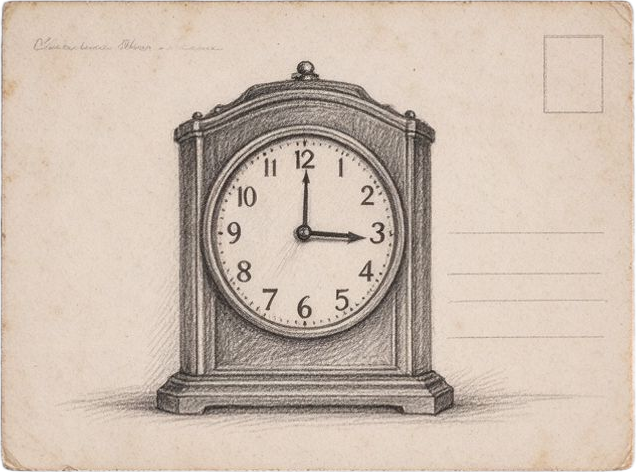

民宿 · 床头
守和先生：
南京又下雨了。院墙先湿了，然后才是街。今天路过鼓楼，卖糖粥的阿婆问我：怎么一个人来。我说，我在等一个人。
等一个人，原来是这样等的——把想说的话写好，又怕寄出去。
《京话》的样书印好了。我包了两层油纸，想着，若是你赶不及来取，就留给以后会来的人。
一九四九年，一月十九日，夜。
颖
↓ 向下滑动读信
背包 · 外婆的旧物
 信
信
明信片 钥匙
钥匙 照片
照片 小票
小票 样书
样书你拨到哪一天，就看见哪一天。